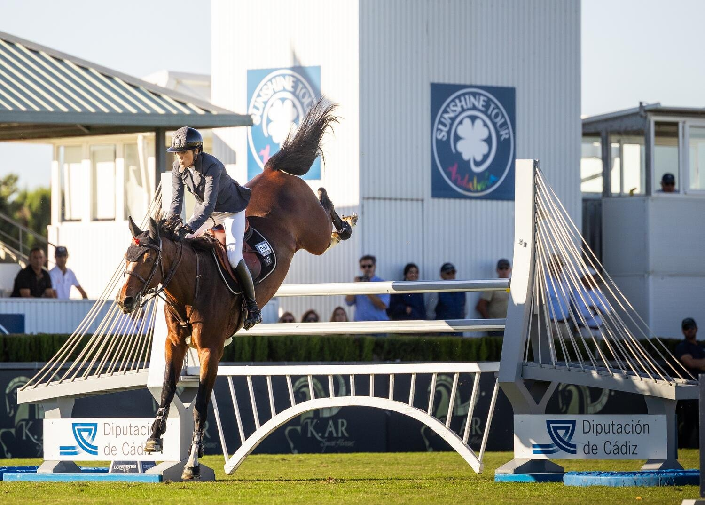

Pilar Cordón y Pica Pica Z ganan el Gran Premio Diputación de Cádiz de 1,55 m
Pilar Cordón paró el crono en 40,03 segundos en el desempate y se llevó el Gran Premio Diputación de Cádiz del CSI 4* de Vejer de la Frontera, dotado con 109.800 euros.

La prueba cerró la semana internacional inaugural del VI Andalucía October Tour. Cincuenta combinaciones salieron a la Arena 3 – Don Antonio, en una prueba de 1,55 m puntuable para el Longines Ranking, sobre un recorrido diseñado por Marcos Núñez.
Once pasaron la primera manga sin faltas y se clasificaron para el desempate. Seis de ellas repitieron el cero, y ahí se decidió todo al cronómetro: Cordón con «Pica Pica Z» hizo el mejor tiempo de los seis, 40,03 s.
David Will, con Maverick, también limpio en las dos mangas, quedó segundo en 40,67 s, a 64 centésimas de la ganadora. Robin Lesqueren completó el podio con FBI d'Ellipse, en 40,97 s, a 94 centésimas.
La diferencia entre el primero y el tercero fue inferior a un segundo, con los tres clasificados sin penalización en ambas fases.
Todo sobre Andalucía October Tour - Week 1 →
Por Lucía Valdeolmos